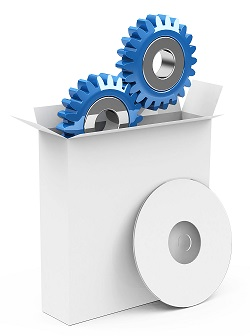

Software
Our software services are still in start up. Contact us now to find out how you could benefit from being an early adoptor of 17 Ways Software.
On This Page |
 |
Custom Development
At 17 Ways we have decades of experience in developing custom software solutions, in particular for the finance industry. We can run whole projects for you or provide software maintenance services. Our approach to software development is a combination of Agile and Waterfall. We start with a clear definition of the requirements, constraints and timeframes. From this we build a working map of the system that we can walk you through so that you know exactly what you will get once we start the development phase. Once development commences we work in an Agile way refining the requirements and delivering the system in a series of incremental steps.
Call us on 02 8964 8234 or email us at info@17ways.com.au today to arrange a free, no obligation first meeting.
Testing Services
We can provide standalone testing if you require. Our testing team can help you with either internal systems testing or testing and validating of vendor software. We can provide senior test managers who can work with you to identify the key drivers for testing your systems. We can offer full end-to-end regression testing or more tailored testing based upon specific changes.
Call us on 02 8964 8234 or email us at info@17ways.com.au to learn more.
Offshoring
We can help you to set up an offshore operation, using either your own staff hired locally or one of the many offshoring companies. We have extensive experience of offshoring and can not only help you with the set up of your offshore operation but we can advise on the changes to structure and processes onshore that are required to make it successful.